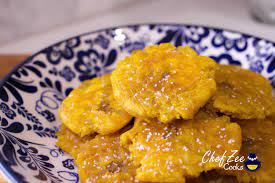

Fried Tostones
Tostones is a fried variation of sliced plantain.
Ingredients
- Green Plantain
- Garlic
- Hot oil
- Salt
Steps
- Heat the oil on high heat until temperature reacher 375 degrees F.
- Peel the green platain and cut it in quarter inch slices.
- Fry the plantain slices until fully cooked.
- Add garlic and salt for flavor.